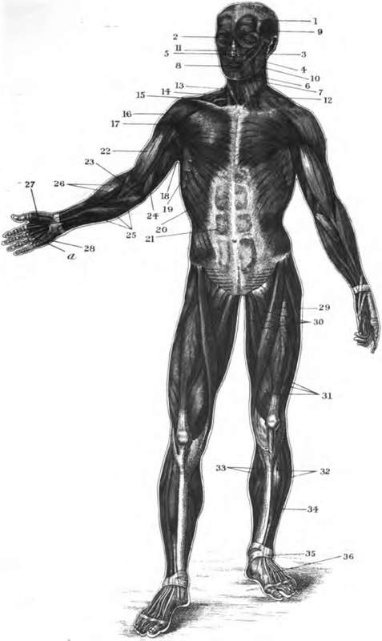

Explanation Of Plate II
Description
This section is from the book "The Human Body: An Elementary Text-Book Of Anatomy, Physiology, And Hygiene", by H. Newell Martin. Also available from Amazon: The Human Body.
Explanation Of Plate II
A view of the muscles situated on the front surface of the body, seen in their natural position. It must be understood that beneath these muscles many others are situated, which cannot be represented in the figure.
Muscles Of The Face, Head, And Neck
1. Muscle Of The Forehead
This, together with a muscle at the back of the head, has the power of moving the scalp.
2. Muscle That Closes The Eyelids
The muscle that raises the upper eyelid so as to open the eye, is situated within the orbit, and consequently cannot be seen in this figure. 3,4,5. Muscles that raise the Upper Lip and angle of the Mouth. 6, 7. Muscles that depress the Lower Lip and angle of the Mouth. By the action of the muscles which raise the upper lip, and those that depress the lower lip, the hps are separated.
8. Muscle that draws the Lips together.
9. Muscle of the Temple (Temporal Muscle).
10. Masseter Muscle
9 and 10 are the two chief muscles of mastication, for when they contract, the movable lower jaw is elevated, so as to crush the food between the teeth in the upper and lower jaws.
11. Muscle That Compresses The Nostril
Close to its outer side is a small muscle that dilates the nostril.
12. Muscle that wrinkles the Skin of the Neck, and assists in depressing the lower jaw.
13. Muscle that assists in steadying the Head, and also in moving it from side to side.
14. Muscles That Depress The Windpipe And Organ Of Voice
The muscles that elevate the same parts are placed beneath the lower jaw, and cannot be seen in the figure.
Muscles That Connect The Upper Extremity To The Trunk
Portions of four of these muscles are represented in the figure, viz.:
15. Muscle That Elevates The Shoulder
Trapezius Muscle.
17. Great Muscle of the Chest, which draws the Arm in front of the Chest (Great Pectoral Muscle).
18. Broad Muscle of the Back, which draws the Arm downwards across the back of the Body (Latissimus Dorsi).
19. Serrated Muscle extends between the Ribs and Shoulder-blade, and draws the shoulder forwards and rotates it, a movement which takes place in the elevation of the arm above the head (Serratus magnus).
At the lower part of the trunk, on each side, may be seen the large muscle which, from the oblique direction of its fibres, is called, 90. Outer Oblique Muscle of the Abdomen.
Several muscles lie beneath it. The outline of one of these:
81. Straight Muscle of the Abdomen, may be seen beneath the expanded tendon of insertion of the oblique muscle. These abdominal muscles, by their contraction, possess the power of compressing the contents of the abdomen.
Muscles Of The Upper Extremity
16. Muscle that elevates the Arm (Deltoid Muscle). 22. Biceps or Two-headed Muscle (see also page 88).
83. Anterior Muscle Of The Arm
This and the Biceps are for the purpose of bending the Fore Arm.
84. Triceps, Or Three-Headed Muscle
This counteracts the last two muscles, for it extends the Fore-arm.
25. Muscles that bend the Wrist and Fingers, and pronate the Fore-arm and Hand—that is, turn the Hand with the palm downwards. They are called the Flexor and Pronator Muscles. 96. Muscles that extend the Wrist and Fingers, and supinate the Fore-arm and Hand—that is, turn the Hand with its palm upwards. They are called the Extensor and Supinator Muscles.
27. Muscles That Constitute The Ball Of The Thumb
They move it in different directions.
28. Muscles that move the Little Finger.
Muscles Which Connect The Lower Extremity To The Pelvic Bone
Several are represented in the figure.
89. Muscle usually stated to have the power of crossing one Leg over the other, hence called the Tailor's Muscle, or Sartorius; its real action is to assist in bending the knee. SO. Muscles that draw the Thighs together (Adductor Muscles).
31. Muscles that extend or straighten the Leg (Extensor Muscles). The muscles that bend the leg are placed on the back of the thigh, so that they cannot be seen in the figure.
Muscles Of The Leg And Foot
32. Muscles that bend the Foot upon the Leg, and extend the Toes.
33. Muscles that raise the Heel—these form the prominence of the calf of the Leg.
34. Muscles that turn the Foot outwards.
35. A band of membrane which retains in position the tendons which pass from the leg to the foot.
36. A short muscle which extends the Toes.
The muscles which turn the foot inwards, so as to counteract the last named muscles, lie beneath the great muscles of the calf, which consequently conceal them. The foot possesses numerous muscles, which act upon the toes, so as to move them about in various directions. These are principally placed on the sole of the foot, so that they cannot be seen in the figure. Only one muscle, 36, which assists in extending the toes, is placed on the back of the foot.
PLATE II. THE SUPERFICIAL MUSCLES OF THE FRONT OF THE BODY.
Continue to: